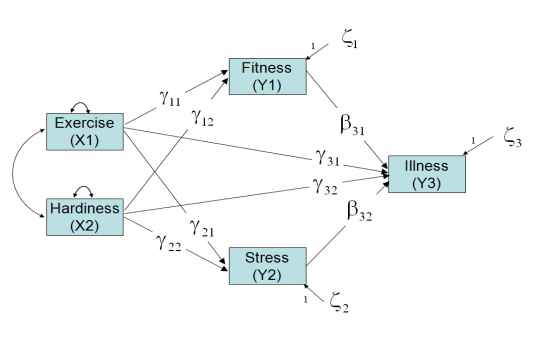

Bölüm 5 Yol Analizi
Yol analizi modeli YEM ailesinin en eski üyelerinden biridir ve halen yaygın olarak kullanılmaktadır.
Herbir yapının sadece tek bir gözlenen ölçümün (göstergesinin) olduğu durumlar bulunabilir ve bu durumlarda da tek-gösterge tekniği olan yol analizi kullanılabilir. Bu analizde ele alınan ölçülen değişkenlerin mükemmel derecede güvenilir olduğu varsayılır.
Yol analizinde sadece gözlenen değişkenler modellenir. Bu model gözlenen değişkenler için bir yapısal eşitlik modelidir.
YEM bir grup değişken arasındaki ilişkilerin modellenmesine ve öngörülen modellerin test edilmesine imkan verir.
Temelde gözlenenen değişkenlerin varyanslarına ve gözlenen değişkenler arasındaki kovaryanslara dayalı olan YEM analizlerinin amacı bir grup gözlenen değişken arasındaki kovaryans örüntüsünü anlamak ve araştırma modeli ile gözlenen değişkenlerin varyanslarını açıklamaktır.
5.1 Yol Analizi Modelleri
Yol analizinde amaç ölçülen değişkenler arasındaki ilişkileri açıklamaktır.
Yol analizi gözlenen değişkenler arasındakı doğrudan ve doğrudan olmayan etkileri gösteren yapısal modellerin tanımlanmasına ve test edilmesine izin verir
5.2 Bir Araştırma Senaryosu: Hastalık Faktörleri
Sunumdaki örnek Roth, Wiebe, Fillingim ve Shay’in (1989) çalışmasından gelmektedir. Çalışmalarında üniversite öğrencilerinde egzersiz, dayanıklılık, form ve stresin hastalık üzerindeki etkilerini incelemişlerdir.
🔗illness.dat adlı veri setinde 5 değişken, 400 birey vardır. Değişkenler egzersiz, dayanıklılık, form, stres ve hastalık değişkenleri olup sürekli değişkenlerdir.
Araştırma hipotezleri:
egzersiz ve dayanıklılık formu etkiler.
egzersiz ve dayanıklılık stresi etkiler.
egzersiz, dayanıklılık, form ve stres hastalığı (illness) etkiler.
Bu üç hipotezin her biri çoklu regresyon modelidir:
\(\text{form}_i = \beta_0 + \beta_{\text{eegzersiz}_i} + \beta_{\text{dayanıklılık}_i} + e_{fi}\)
\(\text{stres}_i = \beta_0 + \beta_{\text{eegzersiz}_i} + \beta_{\text{dayanıklılık}_i} + e_{fi}\)
\(\text{hastalık}_i = \beta_0 + \beta_{\text{eegzersiz}_i} + \beta_{\text{dayanıklılık}_i} + \beta_{\text{form}_i} + \beta_{\text{stres}_i} + e_{fi}\)
Bu modeller R'da lavaan paketi ile model denklemi oluşturularak kullanılmalıdır.
yol_model <- 'stres ~ egzersiz + dayaniklilik
hastalik ~ egzersiz + dayaniklilik + form + stres
form ~ egzersiz + dayaniklilik'- Veri setini okuma
library(readr)
veri <- read_table("import/illness.dat", col_names = FALSE)
colnames(veri) <- c("form", "stres", "hastalik", "egzersiz", "dayaniklilik")- Yol modelini kurma

5.3 Yol Şemasının Öğeleri
Gözlenen Değişken
Dışsal (Exogenous) Değişken: Nedenleri bilinmeyen ve modelde gösterilmeyen değişkendir. Dışsal değişken değişkenlik göstermekte serbesttir.
- Örneğin, egzersiz ve dayaniklilik
İçsel (Endogenous) Değişken: Varsayılan nedenleri modelde açıkça gösterilen değişkendir. İçsel değişken değişkenlik göstermekte serbest değildir.
Örneğin, form, stres ve hastalık
Her içsel değişkenin bozukluğu (disturbance) vardır ve bozukluk (disturbance) modelde D sembolü ile gösterilir.
Bozukluk model için hata (artık) terimidir ve içsel değişkende gözlenen varyansın açıklanmayan kısmını temsil eder.
Bozukluk ilgili içsel değişkenin ölçülemeyen bütün nedenlerini temsil eden bileşik bir değişkendir.
Model ele alındığında bu nedenlerin doğası ve sayısı bilinmediğinden bozukluklar gizil değişkenler olarak düşünülebilir ve çember sembolü ile temsil edilirler.
Gizil Değişkenler
doğrudan ölçülmezler.
bir değer alamayabilirler.
daha doğrudan ölçülebilen değişkenleri etkilediklerine inanılır.
Yapısal eşitlik modelinde iki tür gizil değişken vardır:
- faktör veya yapı
- artık veya bozukluk
-
Bir değişkenin diğer bir değişken üzerindeki doğrudan etkisi (direct effect) olup okun kuyruğundaki değişkenin okun başındaki değişkeni etkilediği varsayılır. Doğrudan etki yol olarak da adlandırılır.
Örneğin, egzersiz’ın form üzerindeki doğrudan etkisi
Örneğin, Dfi’nin form üzerindeki doğrudan etkisi (ölçülmeyen bütün nedenlerin form üzerindeki doğrudan etkisi)
Doğrudan etkilerin istatistiksel kestirimi yol katsayıları (path coefficients) olup çoklu regresyondaki regresyon katsayıları gibi yorumlanır.
bozukluk ve \(y_1\) yolunda gözüken 1 sayısı ölçekleme sabitidir (scaling constant), standartlaştırılmamış artık yol katsayısı (unstandardized residual path coefficient) olarak da adlandırılır ve bozukluğa bir ölçek atandığını gösterir.
- Bozukluklar gizil olduğu ve gizil değişkenler de program onlarla ilgili herhangi bir kestirimde bulunmadan önce ölçeğe ihtiyaç duyduklarından böyle bir sabit atanır.
- İki dışsal değişken arasındaki analiz edilmeyen ilişki
- Örneğin, egsersiz degişkeni ve dayanıklılık değişkeni arasındaki kovaryans
- Bir dışsal değişkenin varyansı
- Örneğin, dayanıklılık değişkeninin varyansı
- Bir bozuklugun varyansı
- Örneğin, D’nin varyansı
5.4 Doğrudan Etki
Bir dışsal veya içsel bir değişken diğer bir içsel değişkenin doğrudan nedeni olabilir.
- egzersiz → form
- dayaniklilik → form
- egzersiz → stres
- dayaniklilik → stres
- form → hastalik
- stres → hastalik
- egzersiz → hastalik
- dayaniklilik → hastalik

5.5 Yol Şemasının Öğeleri
Dolaylı veya Arabulucu Etki

Bazı içsel değişkenlerin yol modelinde hem bağımsız hem de bağımlı değişken olarak ikili rolü vardır. Bu değişkenlere arabulucu değişkenler adı verilir.
form
stres
-
Arabulucu değişkenler kendilerinden önceki değişkenlerin nedensel etkilerinin bir kısmını kendilerinden sonraki değişkenlere iletirler, böyle etkilere dolaylı etkiler adı verilir.
- egzersiz → form → hastalik
- dayaniklilik→ form → hastalik
- egzersiz → stres → hastalik
- dayaniklilik → stres → hastalik
5.6 Yol Analizi Modeli
Veri modellemedeki düşünce gözlenen kovaryans matrisinin bir grup değişken arasındaki varsayılan ilişki tarafından üretilip üretilemeyeceğini test etmektir.
Varsayılan model belli bir varyans ve kovaryans deseni gerektirir ki bu varyans ve kovaryans deseni üretilmiş varyans ve kovaryans matrisi (reproduced variance and covariance matrix) olarak adlandırılır.
Bu matris çoğunlukla üretilmiş kovaryans matrisi (reproduced covariance matrix) olarak kısaltılır.
Gözlenen kovaryans matrisi ve üretilmiş kovaryans matrisi arasındaki fark artık kovaryans matrisini (residual covariance matrix) oluşturur.
Eğer artık kovaryans matrisinin bütün elemanları sıfırsa, varsayılan model veriyle tamamen eşleşmiş demektir (mükemmel model-veri uyumu)
Eğer artık kovaryans matrisinin bütün elemanları sıfır değilse, varsayılan model ve veri arasında bir takım uyuşmazlıklar vardır.
Yol analizi modelinde sıfır hipotezi, model tarafından üretilen kovaryans matrisinin gerçek veriyle (örneğin, gözlenen kovaryans matrisiyle) tamamen eşleştiğidir.
\(\sum = \hat{\sum}\)
Burada
\(\sum\) (sigma): gözlenen değişkenlerin evren kovaryans matrisi
\(\hat{\sum}\): model tarafından üretilen kovaryans matrisi
Yol analizi modelinde, sıfır hipotezinin reddedilmesi istenmez! Bu nedenle, genel model uyumunu test etmek için kullanılan olabilirlik oranı (ki-kare) testinin p-değerinin yüksek olması istenir.
Artık kovaryans matrisi model tarafından açıklanmayan varyans ve kovaryansları içeren matristir. Aşağıdaki eşitlikle hesaplanır:
\(\sum - \hat{\sum}\)
S örneklemden elde edilen gözlenen kovaryans matrisidir.
Gözlenen değişkenler arasındaki bütün varyans ve kovaryanslar model tarafından açıklandığı zaman artık kovaryans matrisinin bütün öğeleri sıfır olacaktır.
Aksi halde, artık kovaryans matrisinin sıfırdan farklı olacaktır.
5.6.1 Hastalık Faktörleri (Yol Şeması)
library(lavaan)
yol_model <- 'stres ~ egzersiz + dayaniklilik
hastalik ~ egzersiz + dayaniklilik + form + stres
form ~ egzersiz + dayaniklilik
egzersiz ~~ dayaniklilik'
yol_fit <- sem(yol_model, veri)
semPaths(yol_fit,rotation=2, curvePivot = TRUE,
sizeMan = 12, sizeInt = 1,
sizeLat = 4,
edge.label.cex = 1.8,
pastel=TRUE,
nCharNodes = 0, nCharEdges = 0)
5.7 Evren Kovaryans Matrisi
- hastalık faktörleri örneği için gözlenen değişkenlerin evren kovaryans matrisi \(\sum\) aşağıdaki gibidir:
\[\begin{bmatrix}{} VAR_{y_1}\\ COV_{y_2,y_1} & VAR_{y_2}\\ COV_{y_3,y_1} & COV_{y_3,y_2} & VAR_{y_3}\\ COV_{x_1,y_1} & COV_{x_1,y_2} & COV_{x_1,y_3} & VAR_{x_1}\\ COV_{x_2,y_1} & COV_{x_2,y_2} & COV_{x_2,y_3} & COV_{x_2,x_1} & VAR_{x_2}\\ \end{bmatrix}{}\]
\(\sum\) kare ve simetrik bir matristir ve matriste çoğunlukla alt üçgen ve köşegen öğeleri yazılır.
bir yol modelindeki gözlenen değişkenler arasındaki varyans ve kovaryanslardır.
Model gözlemlerinin sayısı \(v\) gözlenen değişkenlerin sayısı olmak üzere \(v(v + 1) / 2\)’ye eşittir.
hastalık faktörleri örneğine göre, \(v = 5\) ve \(v(v + 1) / 2 = 15\)
\[\begin{bmatrix}{} VAR_{y_1}\\ COV_{y_2,y_1} & VAR_{y_2}\\ COV_{y_3,y_1} & COV_{y_3,y_2} & VAR_{y_3}\\ COV_{x_1,y_1} & COV_{x_1,y_2} & COV_{x_1,y_3} & VAR_{x_1}\\ COV_{x_2,y_1} & COV_{x_2,y_2} & COV_{x_2,y_3} & COV_{x_2,x_1} & VAR_{x_2}\\ \end{bmatrix}{}\]
Modelden kestirilen parametre sayısı
ya gözlenen ya da gözlenmeyen dışsal değişkenlerin varyanslarının ve kovaryanslarının sayısı ve
gözlenen değişkenlerden içsel değişkenlere olan doğrudan etkilerin sayısı toplamıdır.
Hastalık faktörleri örneğinde, kestirilecek model parametreleri:
Dışsal değişkenlerin varyansları: 2
Dışsal değişkenlerin kovaryansı: 1
Bozuklukların varyansları: 3
Doğrudan etkiler: 8
\(2 + 1 + 3 + 8 = 14\)
İçsel değişkenlerin varyansları ve kovaryansları model parametreleri olarak ele alınmaz.
Bozukluk, modelde nedeni bilinmediğinden, gözlenmeyen dışsal değişken olarak ele alınır.
Model parametresi araştırmacının tanımlamasına bağlı olarak serbest (free), sabit (fixed) veya sınırlandırılmış (constrained) olabilir.
Serbest parametre (free parameter) örneklem verisinden bilgisayar yazılımı tarafından kestirilen parametredir.
Sabit parametre (fixed parameter) bir sabite eşit olarak belirlenen parametredir; yazılım bu sabiti veriye bağlı olmaksızın parametrenin kestirimi olarak kabul eder.
Sınırlandırılmış parametre (constrained parameter) yazılım tarafından belli sınırlılıklar içerisinde kestirilir ancak bir sabite eşit olmak üzere sabitlenmez.
5.7.1 Serbestlik Derecesi:
Model serbestlik derecesi (sd) model gözlemlerinin sayısı ve modelden kestirilecek parametre sayısı arasındaki farka eşittir:
Hastalık faktörleri örneğinde,
\[sd = 15 – 14 = 1\]
- sd<0 model tanımlanamaz.
- sd=0 model ancak tanımlanır (just identification) ve kuramsal olarak her parametrenin tek bir çözümü vardır. Model veriye mükemmel uyum gösterir.
- sd>0 model aşırı tanımlanmış (over identification) olur. Aşırı tanımlanan modellerde kuramsal olarak her bir parametrenin birden fazla çözümü vardır.
5.8 Model Tanımlanması
(Model Identification) İlkeleri
Bir yol modelinin değerlendirilmesi sırasında karşılaşılacak olası problemlerden biri modelin tanımlanmasıdır.
Modeldeki her bir parametre için kuramsal olarak tek bir kestirim üretilebiliyorsa, model tanımlanır denir. Aksi halde, model tanımlanamaz.
Kuramsal olarak ifadesi tanımlanmanın verinin değil, modelin bir özelliği olduğunu vurgulamak için kullanılmıştır.
Örneğin, eğer bir model tanımlanmazsa, örneklem büyüklüğüne (100, 1000, vb.) bağlı olmaksızın tanımlanamaz olarak kalır.
Bu nedenle, tanımlanmayan modellerin yeniden tanımlanması gerekir. Aksi halde, analizler çözüm üretmez.
-
Herhangi bir yapısal eşitlik modeli için tanımlanmanın gerektirdiği iki koşul vardır:
Her gözlenmeyen (gizil) değişken bir ölçeğe atanmalıdır, bozukluk yol analizindeki tek gizil değişkendir.
En az serbest model parametreleri kadar gözlem olmalıdır (sd ≥ 0)
Gizil Değişkenlere Ölçek Atanması
Gizil değişkenler yapay bir ölçektedirler. Yazılımın gizil değişkenleri içeren etkilerin kestirimlerini hesaplayabilmesi için gizil değişkenlere bir ölçek atanması gerekir.
-
Unit Loading Identification (ULI) constraint: Artık yol katsayısı (bozukluğun doğrudan etkisini ifade eden yol katsayısı) 1.0’e sabitlenir, böylece bozukluk ilgili içsel değişkenin açıklanmayan varyansıyla ilişkili bir ölçeğe atanmış olur.
- Regresyon ve yol analizi modellerinde, ölçekler bozukluklara genellikle ULI aracılığıyla atanırlar.
Unit Variance Identification (UVI) constraint: Gizil içsel değişkenlerin (yol modelinde bozuklukların) varyansı 1.0’e eşitlenir böylece gizil değişkenin varyansı standartlaştırılmış ölçekte olur.
5.8.1 Yetersiz Tanımlanma (Underidentification)
Yetersiz tanımlanan bir modelde serbest model parametrelerinin sayısı gözlem sayısından büyüktür, diğer bir ifadeyle modelin serbestlik derecesi sıfırdan küçüktür (sd < 0).
Yetersiz tanımlanan bir model test edilemez ve yeniden tanımlanması gerekir. Bu durumda en az bir parametrenin çözümü yoktur.
Örnek:
-
Gözlem eksikliğinin tanımlanmamaya nasıl yol açtığının bir örneği
- \(a + b = 6\)
Verilen eşitlik bir model olarak ele alınırsa, 6 gözlem, a ve b de parametrelerdir.
Eşitlikte parametre sayısı (2), gözlem sayısından (1) daha fazla olduğundan,her bir parametre için tek bir çözüm bulmak imkansızdır.
a ve b parametreleri için eşitliği sağlayacak sonsuz sayıda çözüm vardır:
Örneğin, (a = 4, b = 2), (a = 8, b = -2) vb.
Yetersiz tanımlanan bir yol modeli için program her bir parametreye ait tek bir kestirim üretmeye çalışırken de benzer bir durum söz konusudur.
5.8.2 Ancak Tanımlanma (Just Identification)
- Ancak tanımlanan bir modelde parametre sayısı ve gözlem sayısı birbirine eşittir, diğer bir ifadeyle modelin serbestlik derecesi sıfıra eşittir (sd = 0) ve model tanımlanır; kuramsal olarak her parametrenin tek bir çözümü vardır.
- Örnek:
Ancak tanımlanmanın bir örneği aşağıda verilmiştir:
- \(a + b = 6\)
- \(2a + b =10\)
- Verilen eşitlikler bir model olarak ele alınırsa, 6 ve 10
gözlemler, a ve b de parametrelerdir.
- Eşitlikte parametre sayısı (2), gözlem sayısına (2) eşit
olduğundan,her bir parametre için tek bir çözümü
bulunmaktadır.
(a = 4, b = 2)
Parametre kestirimleri verildiğinde gözlemler mükemmel bir şekilde üretilir.
Ancak tanımlanan bir yol modeli için program her bir parametreye ait tek bir kestirim üretmekle kalmayıp model veriye mükemmel uyum sağlayacaktır.
5.8.3 Aşırı Tanımlanma (Overidentification)
- Aşırı tanımlanan bir modelde parametre sayısı, gözlem sayısından küçüktür, diğer bir ifadeyle modelin serbestlik derecesi sıfırdan büyüktür sd > 0, kuramsal olarak her parametrenin olası bir çok çözümü vardır. 
- Aşırı tanımlanan bir model için, üretilen kovaryans matrisi örneklem kovaryans matrisini mükemmel bir şekilde üretmeyecektir.
Aşırı tanımlanmanın bir örneği aşağıda verilmiştir:
- \(a + b = 6\)
- \(2a + b =10\)
- \(3a + b = 12\)
- Verilen eşitlikler bir model olarak ele alınırsa, 6, 10 ve
12 gözlemler, a ve b de parametrelerdir.
- Üç eşitliği sağlayacak a ve b değerleri bulunmayabilir.
Örneğin, (a = 4, b = 2) değerleri sadece ilk iki eşitliği sağlar.
-
Aşırı tanımlama durumda, her bir parametre için tek bir çözüm aşağıdaki şekilde üretilir:
Gözlemler ve üretilen gözlemler arasındaki farkın karesinin toplamının mümkün olduğunca küçük olacağı pozitif parametre değerleri bulunur.
Örneğin, (a = 3, b = 3,3) sadece en küçük toplam kareler farkını sağlamakla kalmaz tek bir çözüm üretir.
5.9 Model-Veri Uyumunun Değerlendirilmesi
Kestirilen parametre sayısından daha fazla sayıda gözleme sahip olan aşırı tanımlanan (overidentified) modeller genellikle veriye mükemmel uyum sağlamaz. Bu durumda böyle modellerin veriyle ne derece uyumlu olduğunu ölçmeye ihtiyaç vardır.
YEM literatüründe tanımlanan çok sayıda model uyum indeksi vardır ve sürekli olarak yeni indeksler geliştirilmektedir.
-
Çok sayıda farklı uyum indeksinin olması bazı problemleri de beraberinde getirir:
Farklı makalelerde farklı uyum indeksleri rapor edilir.
Aynı makale için farklı hakemler kendi bildikleri veya tercih ettikleri farklı indekslerin rapor edilmesini isteyebilirler.
Uyum indekslerinin değerlerini rapor ederken seçici davranma olasılığı vardır (örneğin, sadece iyi uyum öneren uyum indekslerinin rapor edilmesi gibi).
-
YEM uygulamalarına ve simülasyon çalışmalarına göre YEM analizinin sonuçlarını rapor ederken sunulacak ve yorumlanacak uyum indeksleri aşağıdaki gibidir:
Model Ki-Kare Değeri
Steiger-Lind Root Mean Square Error of Approximation RMSEA (Steiger, 1990) (%90 güven aralığı ile birlikte)
Bentler Comparative Fit Index CFI (Bentler, 1990)
Standardized Root Mean Square Residual SRMR
Uyum indekslerinin değerleri bir modelin sadece ortalama veya genel uyumunu belirtir. Bu nedenle belli bir indeksin değeri uygun bile görünse, modelin belli kısımları veriye zayıf uyum sağlayabilir.
Uyum indeksleri sonuçların kuramsal olarak anlamlı olup olmadığını belirtmezler.
Örneğin, bazı yol katsayılarının işaretleri beklenenin aksi yönde olabilir. Uyum indekslerinin değerleri uygun bile görünse beklenmeyen sonuçlar açıklama gerektirir.
Yeterli uyumu öneren uyum indekslerinin değerleri yordayıcıların yordama güçlerinin de yüksek olduğunu belirtmezler.
Örneğin, veriye mükemmel uyum sağlayan modellerin bozukluklarının varyansı halen yüksek olabilir.
Tek bir indeks modelin sadece belli bir yönünü yansıttığından,modelin iyi uyum sağladığını belirtmek için tek başına yeterli olmaz. Bu nedenle, model uyumu birden fazla indeksin değerine dayanarak değerlendirilir.
Uyum hem modelin belli kısımlarında bölgesel olarak hem de genel model ve veri uyuşmasının ne kadar iyi olduğu yönünde global olarak değerlendirilmelidir.
Genel olarak YEM analizinde model uyumu değerlendirilirken, odak tek bir istatistiksel anlamlılık testinde değildir. Çeşitli indeksleri incelerken bütüncül bir yaklaşım kullanılmalıdır.
Çoklu indekslerin kullanılması bir modelin uyumu ile ilgili en doğru yaklaşımı verecektir.
5.9.1 Ki-Kare Testi (Chi-Square Test)
Ki-kare testi gözlenen kovaryans matrisinin tanımlanan modelle tutarlı olup olmadığını değerlendirir.
| \(H_0:\sum = \hat{\sum}\) | \(H_0:\sum_{RES}=0\) | |
| \(H_1:\sum\neq\hat{\sum}\) | \(H_1:\sum_{RES}\neq0\) |
MLE yöntemi için sıfır hipotezini değerlendirmek üzere T-istatistiği (model chi-square, likelihood ratio chi-square veya generalized likelihood ratio olarak da adlandırılır) hesaplanır: \(T=(n-1)F_{ML}\)
-
Burada n örneklem büyüklüğüdür.
- n büyük ise ve ölçülen değişkenler evrende çok değişkenli normal dağılımlara sahipse ve doğru model tanımlanmışsa; T-istatistiği yaklaşık olarak tanımlanan modelin serbestlik derecesi ile ki-kare dağılımı gösterir.
Ancak tanımlanan (just identified) bir model için ki-kare değeri genellikle sıfıra eşittir ve serbestlik derecesi yoktur sd = 0. Eğer model ki-kare değeri sıfıra eşitse model veriye mükemmel bir şekilde uyar (kestirilen korelasyon ve kovaryans değerleri gözlenenlere eşittir).
Model ki-kare değeri arttıkça, aşırı tanımlanan (overidentified) bir modelin uyumu giderek kötüleşir.
Örneğin, sd = 1 ile 12.30’a eşit model ki-kare değeri.
Model ki-kare değeri arttıkça, modelin veriye uyumu kötüleştiği için model ki-kare aslında bir kötülük uyum indeksidir.
Geleneksel hipotez testinin aksine, ki-kare testinin sıfır hipotezinin reddedilmemesi tercih edilir. Sıfır hipotezinin reddedilmemesi modelin veriye uyduğunu önerir.
Diğer yandan sıfır hipotezinin reddedilmesi model-veri uyumunun iyi olmadığını önerir.
fitmeasures(yol_fit,fit.measures = c("chisq" ,"df" , "pvalue"))## chisq df pvalue
## 12.3 1.0 0.0sd = 1 için ki-karenin 0.05 alfa düzeyindeki kritik değeri 3.84’tür. 12.3 değeri 3.84 değerinden büyük olduğundan gözlenen kikare değeri (12,302)
0,05 alfa düzeyinde istatistiksel olarak anlamlıdır.
12.3 değerini elde etme olasılığını da verir. Örnekte bu olasılık 0.0005’tir. Bu değer 0.05 alfa düzeyinden küçüktür.
Ki-kare testi örneklem büyüklüğünden doğrudan etkilenir. Eğer *n büyükse ki bu durum YEM için genellikle istenen bir durumdur, ki-kare testine dayanarak modeli zayıf uyumlu gerekçesiyle reddetmek daha olasıdır (gözlenen ve kestirilen kovaryans değerleri arasındaki fark çok minimal düzeyde olsa bile).
Eğer ki-kare testine dayalı sıfır hipotezi reddedilirse, modelin yeterliğini incelemek için diğer indeksler düşünülmelidir.
Eğer n küçükse ve güç eksikliğinden dolayı sıfır hipotezi reddedilmediyse, diğer uyum indeksleri modelin desteklenip desteklenmemesinde yardımcı olacaktır.
Ki-kare testi örneklem büyüklüğüne bağlılığından dolayı iyilik uyumunun değerlendirilmesi için çok ideal değildir. Ancak geleneksel olarak rapor edilir ve diğer uyum indeksleriyle desteklenir.
Model ki-kare değerinin örneklem büyüklüğüne hassasiyetini azaltmak için bazı araştırmacılar bu değeri ilgili serbestlik derecesine bölerler. Elde edilen değer normed chi-square (NC) değeri olarak adlandırılır.
-
Ancak bu değerin yorumlanması için minimum kabul edilebilirlik düzeyini temsil edecek net bir kesim değeri yoktur.
- NC <= 2 ve ya 3 ve ya 5 (Kabul edilir.)
Ayrıca NC örneklem büyüklüğünün etkisini tamamen düzeltmez.
5.9.2 RMSEA
- Root Mean Square Error of Approximation (RMSEA) serbestlik derecesinin bir fonksiyonu olarak uyumu değerlendiren bir indekstir:
\(RMSEA = \sqrt{\frac{\hat{\delta}}{df(n-1)}}\)
\(\delta\) parametresi araştırmacının modelinin hatalı tanımlanma derecesini yansıtır. Burada \(\hat{\delta} = max(\chi^2 - df,0)\) parantez içindeki iki ifadeden birinin maksimum değerini kapsar.
RMSEA indeksi de kötülük uyum indeksidir.
RMSEA indeksinin daha yüksek değerleri daha kötü uyumu belirtir.
RMSEA = 0 değeri en iyi uyumu belirtir. Ancak RMSEA = 0 değeri mükemmel bir uyumu ifade etmez.
RMSEA uyumu doğrudan serbestlik derecesinin bir fonksiyonu olarak ele alır; modelin tutumunu hesaba katar (ölçülen değişkenlerin sayısına karşılık kestirilen model parametrelerinin sayısı).
-
RMSEA için önerilen kesme noktaları (Hu & Bentler, 1999):
RMSEA ≤ 0.05 iyi uyumu belirtir.
0.05 < RMSEA < 0.08 kabul edilebilir uyumu belirtir.
RMSEA ≥ 0.08 zayıf uyumu belirtir.
RMSEA tarafından kestirilen evren parametresi \(\epsilon\) için %90 güven aralığı genellikle YEM yazılımlarının çıktısında verilir.
\(\epsilon\) için güven aralığı kestirilen merkezi olmayan \(\delta\) parametresine dayanır ve RMSEA örneklem değeri etrafında simetrik olmayabilir.
Bu güven aralığı nokta kestirimi olarak RMSEA değeri ile ilişkili belirsizlik derecesini yansıtır.
Eğer \(\epsilon\) için %90 güven aralığının alt sınırının değeri 0,05’ten küçükse, modelinin evrende tahmini yaklaşık uyuma sahip olduğu hipotezi \(H_{0}:\epsilon_{0} ≤ 0.05\) reddedilmeyecektir.
Çıktıda kestirilen RMSEA değeri ve ilgili %90 güven aralığı (90% C. I.) verilir.
# summary(yol_fit, fit.measures = TRUE)
fitMeasures(yol_fit, c("rmsea","rmsea.ci.lower",
"rmsea.ci.upper","rmsea.pvalue"))## rmsea rmsea.ci.lower rmsea.ci.upper rmsea.pvalue
## 0.168 0.093 0.258 0.006Kestirilen RMSEA değeri 0.168’dir. 0.168 değeri 0.08 değerinden büyük olduğundan RMSEA indeksi model için zayıf uyum belirtir.
%90 güven aralığının alt sınırı 0.05 değerinden büyük olduğundan araştırmacının modelinin evrende tahmini yaklaşık uyuma sahip olduğu hipotezi reddedilir.
5.9.3 SRMR
Standardized Root Mean Square Residual (SRMR) Bu indeks RMR indeksinin hesaplandığı şekilde hesaplanır ancak standartlaştırılmış artıklar kullanılır.
- 0.08’den küçük değerler uygun olarak düşünülür (Hu & Bentler, 1999).
fitMeasures(yol_fit, "srmr")## srmr
## 0.043- Kestirilen SRMR değeri 0.043’dir. 0.043 değeri 0.08 değerinden küçük olduğundan SRMR indeksi model için kabul edilebilir uyum belirtir.
Root Mean Square Residual (RMR) Bu indeksi hesaplamak için her bir artık öğenin karesi alınır, karelerin toplanmasıyla elde edilen toplam artık sayısına bölünür ve bu ortalama kare artıkların kare kökü alınır.
- Sıfır değeri mükemmel bir uyum belirtir ancak sıfırdan büyük değerlerin yorumlanması zordur.
5.9.4 Karşılaştırmalı Uyum İndeksleri
(Comparative Fit Indices)
-
Bir çok indeks araştırmacının modelinin veriye nasıl uyduğunu, modelin uyumunu daha sınırlandırılmış bir modelle karşılaştırarak değerlendirir.
- Araştırmacının modeli ile karşılaştırılan model taban modeli (baseline model) olarak adlandırılır. Bu model tipik olarak bağımsız modeldir (independence model) ve sıfır modeli (null model) olarak da adlandırılır.
Sıfır yol modeli gözlenen değişkenler arasındaki evren kovaryanslarının (dışsal gözlenen değişkenler arasındaki kovaryanslar ve bütün gözlenen değişkenlerin varyansları hariç) sıfır olduğunu varsayar.
-
Sıfır modeli değişkenlerin ilişkili olmadığını varsaydığından genellikle araştırmacının modelinden daha yüksek ki-kare değerine sahiptir.
- Bu nedenle karşılaştırmalı uyum indeksleri artımlı uyum indeksleri (incremental fit indices) olarak da bilinir: daha sınırlandırılmış model (örneğin, sıfır modeli) uyumundan daha esnek model (örneğin, araştırmacının modeli) uyumuna artırım.
Karşılaştırmalı uyum indekslerinden YEM analizlerinde sık kullanılan iki tanesi CFI ve NNFI (TLI) indeksleridir. Ancak iki indeks de örneklem dayanaklı indekslerdir.
CFI indeksi Bentler (1990) tarafından geliştirilmiştir ve aşağıdaki şekilde hesaplanır: \(CFI = \frac{\hat{\delta_{null} - \delta_{researcher}}}{\delta_{null}}\)
Araştırmacının modeli sıfır modelinden daha iyi uyum sağlarsa, araştırmacının modelinin ki-kare değeri sıfır modelinin ki-kare değerinden daha küçük olacaktır.
-
İki model arasındaki fark arttıkça, CFI değeri 1’e daha çok yaklaşacaktır.
- CFI = 0 değeri araştırmacının modelinin sıfır modeline göre gelişmediğini belirtir.
- CFI değerinin 0.90 veya 0.95’ten daha büyük olması kabul edilebilir uyum için önerilir (Hu & Bentler, 1999).
- CFI = 1 değeri mükemmel uyumu belirtmez.
Non-Normed Fit Index (NNFI veya Tucker-Lewis Index, TLI) sıfır modeli ve araştırmacının modelinin serbestlik derecesini hesaba katarak negatif yanlılığı düzeltmeye çalışır:
\[NNFI= \frac{\frac{T_{null}}{df_{null}} - \frac{T_{researcher}}{df_{researcher}}}{\frac{T_{null}}{df_{null}}-1}\]
-
NNFI değerleri 0 ile 1 aralığında değer alır ancak bu aralığın dışında bir değer de alabilir.
- NNFI değerinin 0.90 veya 0,95’ten daha büyük olması kabul edilebilir uyum için önerilir (Hu & Bentler, 1999).
NNFI örneklemlerin aynı evrenden alındığı küçük ve orta büyüklükteki verilerin kullanıldığı çalışmalarda kararlı değildir.
sıfır modeli için ki-kare testine ait değerleri ve CFI ve TLI değerlerini verir:
fitmeasures(yol_fit,fit.measures = c("cfi","tli","nnfi"))## cfi tli nnfi
## 0.948 0.485 0.485Kestirilen CFI değeri 0.949’dur. 0.949 değeri 0.90 değerinden büyük olduğundan CFI indeksi model için iyi uyum belirtir.
Kestirilen TLI değeri 0.485’dur. 0.485 değeri 0.90 değerinden küçük olduğundan TLI indeksi model için zayıf uyum belirtir
5.10 Uyum İndekslerini Raporlarken Öneriler
- Tek bir indeks model uyumunun sadece belli bir yönünü yansıtır. Araştırmacılar aşağıdakilerin rapor edilmesini önerir:
- Model ki-kare değeri: anlamlı olmayan sonuç
| Uyum indeksi | İyi uyum | Kabul Edilebilir Uyum |
|---|---|---|
| \(\chi^2\) | p | |
| \(\chi^2/df\) | 0 ≤ \(\chi^2/df\) ≤ 2 | 2 < \(\chi^2/df\) < 8 |
| SRMR | 0 ≤SRMR ≤ .05 | .05 < SRMR < .08 |
| RMSEA | 0 ≤RMSEA ≤ .05 | .05 < RMSEA < .08 |
| CFI | .95 ≤GFI ≤ 1 | .90 < GFI < .95 |
Not: Bu kesme değerlerin kullanılmasıyla ilgili çok sayıda tartışma vardır.
- Önerilen uyum indeksleri göz önüne alınınca model-veri uyumu ile ilgili ne söylenebilir?
fitmeasures(yol_fit,fit.measures = c("chisq" ,"df" ,"pvalue",
"cfi","tli","rmsea",
"rmsea.ci.lower","rmsea.ci.upper"
,"srmr"))## chisq df pvalue cfi tli
## 12.307 1.000 0.000 0.948 0.485
## rmsea rmsea.ci.lower rmsea.ci.upper srmr
## 0.168 0.093 0.258 0.0435.11 Bireysel İstatistiksel testler:
t-değeri
- Bireysel istatistiksel test belli parametre kestirimlerine dayalı hesaplanır. Hatalı tanımlamanın değerlendirilmesinde kullanışlıdır.
t-değeri = parametre kestirimi / standart hata
Normal olarak dağılır.
z-istatistiği gibi kullanılır.
Parametrelerin beklenen yönde olup olmadığını ve istatistiksel olarak sıfırdan farklı olup olmadığını değerlendirir.
Anlamlı olmayan parametreler 0’a sabitlenebilir ancak test n ile ilişkilidir.
Ancak bir parametrenin sabitlenmesi diğer bütün kestirimleri değiştirecektir. Bu da hatalı tanımlamadan dolayı hatalara sebep olabilir
Standartlaştırılmış Artık
- İdeal olarak artık değerleri küçük ve tek biçimli olmalıdır.
- Artık kovaryans matrisini yorumlamak standartlaştırılmış artık kovaryans matrisinden daha zordur.
- Standartlaştırılmış artık:
- z-puanları gibidir.
- Hangi değerin büyük olduğunu belirlemek kolaydır (0.05 alfa düzeyinde 1.96 istatistiksel anlamlılık)
- Köşegen dışındaki standartlaştırılmış artıkların mutlak değerlerinin ortalaması tipik bir artığı temsil eden bir indeks sağlar.
# lavResiduals(yol_fit)
# resid(yol_fit)
resid(yol_fit, type='normalized')## $type
## [1] "normalized"
##
## $cov
## stres hastlk form egzrsz dynkll
## stres 0.002
## hastalik 0.718 0.392
## form -2.950 -1.031 0.006
## egzersiz -0.021 -0.011 0.010 0.000
## dayaniklilik -0.005 -0.005 0.025 0.067 0.000- Standarlaştırılmış hata kovaryans matrisinde yer alan diyagonal dışındaki her bir değerin mutlak değerinin 1.96’dan küçük olması beklenir.
5.12 Modifikasyon İndeksleri
modindices fonksiyonu ile modifikasyon indeksleri istenebilir.
mi sütunu yapılacak modifikasyon sonucunda ki-karedeki düşüsü göstermektedir.
modindices(yol_fit, sort = TRUE)
## modindices(yol_fit, sort = TRUE, maximum.number = 5)| lhs | op | rhs | mi | epc | sepc.lv | sepc.all | sepc.nox | |
|---|---|---|---|---|---|---|---|---|
| 24 | stres | ~ | hastalik | 12.1 | 0.799 | 0.799 | 0.693 | 0.693 |
| 25 | stres | ~ | form | 12.1 | -0.326 | -0.326 | -0.180 | -0.180 |
| 26 | form | ~ | stres | 12.1 | -0.093 | -0.093 | -0.168 | -0.168 |
| 27 | form | ~ | hastalik | 12.1 | -0.296 | -0.296 | -0.464 | -0.464 |
Bu tablo dört parametreden herhangi birinin (aynı anda, eş zamanlı DEĞİL) model ki-kare değerini 12.1 değerinde düşüreceğini önermektedir.
Artık kovaryans matrisinden gelen kanıt da birleştirildiğinde, modele form değişkeninin stres değişkenine doğrudan etkisini gösteren bir parametre eklenebilir
Bu model ancak tanımlanan modeldir (sd = 0), bu nedenle veriye mükemmel uyum sağlayacaktır
5.13 Modelin Yeniden Tanımlanması
Revised Model 1
- stres ~ form yolu eklenir.
yol_model_v1 <-
'stres ~ egzersiz + dayaniklilik
hastalik ~ egzersiz + dayaniklilik + form + stres
form ~ egzersiz + dayaniklilik
stres ~ form
egzersiz ~~ dayaniklilik'
yol_fit_v1 <- sem(yol_model_v1, veri)
semPaths(yol_fit_v1,rotation=2, curvePivot = TRUE,
sizeMan = 12, sizeInt = 1,
sizeLat = 4,
edge.label.cex = 1.8,
pastel=TRUE,
nCharNodes = 0, nCharEdges = 0)Yeni tanımlanan model için verilen uyum indeksleri beklendiği gibidir.
Kikare = 0 ve sd = 0 olduğunda, p değerini 0,0000 olarak yazdırır. Ancak bu değer ki kare testinin reddedildiği anlamına gelmez.
fitmeasures(yol_fit_v1,fit.measures=c("chisq","p","df"))## chisq df
## 0 0
p_pa <-
semPaths(yol_fit_v1, whatLabels = "est",
sizeMan = 10,
edge.label.cex = 1.15,
style = "ram",layout = "spring" ,
nCharNodes = 0, nCharEdges = 0)
p_pa_2 <- semptools::mark_sig(p_pa, yol_fit_v1)
plot(p_pa_2)good fit vs parsinomy parsinomy principle


5.14 Modelin Yeniden Tanımlanması
Revised Model 2
- anlamlı olmayan yol katsayıları kaldırıldır
yol_model_v1 <-
'stres ~ egzersiz + dayaniklilik
hastalik ~ egzersiz + dayaniklilik + form + stres
form ~ egzersiz + dayaniklilik
stres ~ form
egzersiz ~~ dayaniklilik'
yol_model_v2 <-
'stres ~ dayaniklilik
hastalik ~ form + stres
form ~ egzersiz + dayaniklilik
stres ~ form
egzersiz ~~ dayaniklilik'
yol_fit_v2 <- sem(yol_model_v2, veri)- anlamlı olmayan yol katsayıları kaldırıldır
fitmeasures(yol_fit_v2,c("rmsea","cfi","srmr"))## rmsea cfi srmr
## 0.000 1.000 0.011
m <- matrix(c(NA, NA, "form", NA, NA,
"egzersiz", NA, NA, NA, NA,
NA, NA, NA, NA, "hastalik",
"dayaniklilik", NA, NA, NA, NA,
NA, NA, "stres", NA, NA
), byrow = TRUE, 5, 5)
p_pa <- semPaths(yol_fit_v2, whatLabels = "est",
sizeMan = 10,
edge.label.cex = 1.15,
style = "ram",
nCharNodes = 0, nCharEdges = 0,
layout=m)
fitmeasures(yol_fit_v2,fit.measures = c("chisq" ,"df" , "pvalue",
"cfi","tli","rmsea",
"rmsea.ci.lower", "rmsea.ci.upper"
,"srmr"))## chisq df pvalue cfi tli
## 1.354 3.000 0.716 1.000 1.025
## rmsea rmsea.ci.lower rmsea.ci.upper srmr
## 0.000 0.000 0.061 0.011sd = 3 için ki-karenin 0.05 alfa düzeyindeki kritik değeri 7.82’dir. 1.354 değeri 7.82 değerinden küçük olduğundan gözlenen ki-kare değeri (1,354) 0.05 alfa düzeyinde istatistiksel olarak anlamlı değildir.
RMSEA, CFI ve SRMR indekslerinin değerleri istenilen değerdedir
5.14.1 Ki-Kare Fark Testi
-
Hem revised model 1 hem de revised model 2 veriye iyi uyum sağlamaktadır.
-
Bu durumda hangi model seçilmelidir?
Mükemmel uyum sağlayan ancak daha karmaşık model mi?
İyi uyum sağlayan ancak daha basit model mi?
-
-
Ki-kare fark testi hiyerarşik olarak kümelenmiş iki modelin karşılaştırılmasında oldukça kullanışlıdır.
-
Eğer modellerden birisi diğerinin alt kümesiyse iki model kümelenmiştir (daha basit model daha karmaşık modelin içinde kümelenmiştir).
- Bu durumda revised model 2 (daha basit model) revised model 1 (daha karmaşık model) içinde kümelenmiştir.
-
Ki-kare fark testi modellerin bağıl uyumlarını değerlendirmek için kullanılabilir.
-
İki model de veriye iyi uyum sağladığında, ki-kare değerleri arasındaki fark serbestlik derecesi iki model arasındaki parametre sayısındaki farka eşit olan ki-kare dağılımı gösterir:
\(\chi^2_{dif} = \chi^2_{simple} -\chi^2_{complex}\)
\(df_{dif} = df_{simple} - df_{complex}\)
Anlamlı olmayan ki-kare farkı daha basit modelin daha karmaşık modelden istatistiksel olarak veriye daha kötü uymadığını önerir.
Bu nedenle, daha basit model daha tutumlu olduğundan dolayı seçilmelidir. Aksi halde karmaşık model seçilmelidir.
-
Örnekte revised model 2 (12 model parametresine sahip olup sd = 3) revised model 1’den (15 model parametresine sahip olup sd = 0) daha basittir.
\(\chi^2_{dif} = \chi^2_{simple} -\chi^2_{complex}\)
\(df_{dif} = df_{simple} - df_{complex}\)
-
1.354 ki-kare değeri sd = 3 olduğunda, 0,05 alfa düzeyinde (kritik ki-kare değeri = 7.82) istatistiksel olarak anlamlı değildir.
- Bu nedenle revised model 2 (daha basit olan) revised model 1’e (daha karmaşık olan) tercih edilir şeklinde sonuca varılabilir
5.14.2 AIC ve BIC
Akaike Information Criterion (AIC) ve Bayesian Information Criterion (BIC) evren dayanaklı yordayıcı uyum indeksleri olarak bilinir.
-
Farklı YEM yazılımları AIC ve BIC değerlerini farklı şekilde hesaplayabilir.
- \(AIC = - 2LogL + 2r\) , r modeldeki parametre sayısı
- \(BIC = - 2LogL + r ln n\), n örneklem büyüklüğü
- \(adjusted BIC = - 2LogL + r ln n*\) , n* = (n+2) /24
AIC ve BIC değerleri çoğunlukla aynı veriden kestirilen hiyerarşik olmayan modellerin arasından seçim yapmak için kullanılır. Bağıl olarak daha küçük değerler uygundur
model1
fitmeasures(yol_fit_v1,fit.measures = c("AIC","BIC"))## aic bic
## 21423 21483model2
fitmeasures(yol_fit_v2,fit.measures = c("AIC","BIC"))## aic bic
## 21418 21466İki model kümelenmiş modeller olduğundan, iki model arasında AIC ve BIC değerlerinin karşılaştırılmasına gerek yoktur
Eğer model-veri uyumu zayıfsa, ilk olarak varsayılan model veriye uymaz.
Eğer model-veri uyumu iyiyse, model veri tarafından desteklenir. Alternatif modelleri araştırmak veya daha tutumlu (parsimonious) bir model aramak için ilave analizler yürütülebilir.
Mükemmel veya iyi bir model-veri uyumu mutlaka modelin iyi olduğunu önermez. İyi bir model en basit şekilde olan (tutumluluk ilkesi), ama hala veriye iyi uyan modeldir.
İyi Uyuma karşı Model Tutumluluğu
5.15 sem fonksiyonu
| Argüman | Açıklama | Değerleri |
|---|---|---|
| Model | YEM modeli tanımlanır. | |
| Data | Gözlenen değişkenlerin yer aldığı veri setidir. | |
| sampling.weights | Örneklem ağırlıklandırması yapılacağı durumlarda tanımlanır. | Veri çerçevesinde ağırlıklandırma bilgisinin yer aldığı değişkenin adıdır. |
| group | Çoklu grup analizlerde grup değişkeni tanımlanır. | Veri matrisinde grubu tanımlayan değişkenin adıdır. |
| cluster | Çok düzeyli analizlerde düzey değişkeni tanımlanır. | Veri matrisinde düzeyi tanımlayan değişkenin adıdır. |
| constraints | Modele eklenecek diğer sınırlandırmalar tanımlanır. | |
| estimator | Kestirim yöntemidir. | “ML”, “GLS”, “WLS”, ”ULS”, ”DWLS” gibi |
| formul | tur |
|---|---|
| gizil değişken tanımlama | =~ |
| regresyon | ~ |
| kovaryans | ~~ |
| kesisim | ~1 |
- MODEL bölümü modelin belirlenmesi
- Yol analizinde, her bir içsel (endogenous) değişkenin bir veya daha fazla değişken tarafından yordanması \(~\) ifadesi ile belirtilir.
- Örneğin,
- form~egzersiz + dayaniklilik
ifadesinin anlamı form’ın egzersiz + dayaniklilik tan yordandığıdır.
ham veri kullanıldığı zaman, default modeli değişkenler için ortalamaların/kesişimlerin kestirildiği ortalama yapıları içerecektir.
Yol analizi modeli için kovaryans yapısına odaklanılır. “Means” ve “Intercepts” bölümü altındaki değerler göz ardı edilir.
Ortalamalar/kesişimler çıkarılınca, kestirilen parametre sayısı 14 olmalıdır.
summary(yol_fit)## lavaan 0.6.17 ended normally after 8 iterations
##
## Estimator ML
## Optimization method NLMINB
## Number of model parameters 14
##
## Number of observations 400
##
## Model Test User Model:
##
## Test statistic 12.307
## Degrees of freedom 1
## P-value (Chi-square) 0.000
##
## Parameter Estimates:
##
## Standard errors Standard
## Information Expected
## Information saturated (h1) model Structured
##
## Regressions:
## Estimate Std.Err z-value P(>|z|)
## stres ~
## egzersiz -0.080 0.048 -1.678 0.093
## dayaniklilik -0.556 0.086 -6.475 0.000
## hastalik ~
## egzersiz 0.047 0.042 1.115 0.265
## dayaniklilik -0.010 0.075 -0.138 0.891
## form -0.408 0.076 -5.342 0.000
## stres 0.314 0.041 7.704 0.000
## form ~
## egzersiz 0.206 0.025 8.118 0.000
## dayaniklilik 0.161 0.046 3.506 0.000
##
## Covariances:
## Estimate Std.Err z-value P(>|z|)
## egzersiz ~~
## dayaniklilik 0.000 135.170 0.000 1.000
##
## Variances:
## Estimate Std.Err z-value P(>|z|)
## .stres 4419.143 312.481 14.142 0.000
## .hastalik 2937.014 207.678 14.142 0.000
## .form 1261.565 89.206 14.142 0.000
## egzersiz 4883.673 345.328 14.142 0.000
## dayaniklilik 1496.499 105.818 14.142 0.000Her bir kestirimin yorumu çoklu regresyondaki yorumlara benzerdir.
Örneğin, form ~ egzersiz kestirimi 0.206’dır. Bu değer, egzersiz puanındaki bir birimlik artışın yordanan form puanını 0.206 birimlik artıracağını önerir.
Bu kestirimin standart hatası 0.025’tir. Kestirimin standart hatasına bölünmesiyle t istatistiği elde edilir: 0.206 / 0.025 = 8.12
İki yönlü t testi 0.206 değerinin anlamlı olarak 0’dan farklı olduğunu önerir.
standardizedsolution(yol_fit)| lhs | op | rhs | est.std | se | z | pvalue | ci.lower | ci.upper |
|---|---|---|---|---|---|---|---|---|
| stres | ~ | egzersiz | -0.080 | 0.047 | -1.683 | 0.092 | -0.172 | 0.013 |
| stres | ~ | dayaniklilik | -0.307 | 0.045 | -6.802 | 0.000 | -0.396 | -0.219 |
| hastalik | ~ | egzersiz | 0.054 | 0.048 | 1.116 | 0.264 | -0.041 | 0.148 |
| hastalik | ~ | dayaniklilik | -0.007 | 0.048 | -0.138 | 0.891 | -0.100 | 0.087 |
| hastalik | ~ | form | -0.260 | 0.048 | -5.474 | 0.000 | -0.354 | -0.167 |
| hastalik | ~ | stres | 0.362 | 0.044 | 8.165 | 0.000 | 0.275 | 0.449 |
| form | ~ | egzersiz | 0.371 | 0.043 | 8.721 | 0.000 | 0.288 | 0.455 |
| form | ~ | dayaniklilik | 0.160 | 0.045 | 3.544 | 0.000 | 0.072 | 0.249 |
| egzersiz | ~~ | dayaniklilik | 0.000 | 0.050 | 0.000 | 1.000 | -0.098 | 0.098 |
| stres | ~~ | stres | 0.899 | 0.029 | 31.527 | 0.000 | 0.843 | 0.955 |
| hastalik | ~~ | hastalik | 0.795 | 0.035 | 22.445 | 0.000 | 0.725 | 0.864 |
| form | ~~ | form | 0.836 | 0.034 | 24.730 | 0.000 | 0.770 | 0.903 |
| egzersiz | ~~ | egzersiz | 1.000 | 0.000 | NA | NA | 1.000 | 1.000 |
| dayaniklilik | ~~ | dayaniklilik | 1.000 | 0.000 | NA | NA | 1.000 | 1.000 |
Örneğin, form ~ egzersiz standartlaştırılmış kestirimi 0.371’dir. Bu değer, egzersiz puanındaki bir standart sapmalık artışın yordanan form puanını 0.71 standart sapma artıracağını önerir.
Bu kestirimin standart hatası 0.043’tür.
Kestirimin standart hatasına bölünmesiyle t-istatistiği elde edilir: 0.371 / 0.043 = 8.72
İki-yönlü t-testi 0.371 değerinin anlamlı olarak 0’dan farklı olduğunu önerir.
egzersiz ~~ dayaniklilik değeri 9.105’tir. Bu değer egzersiz ve dayaniklilik değişkenleri arasındaki kovaryans tahminidir.
5.16 Standartlaştırılmış Artık
Standartlaştırılmamış artık varyans (unstandardized residual variance), her bir içsel değişkendeki yordayıcılar tarafından açıklanmayan varyans miktarını söyler.
Örneğin, form değişkenindeki açıklanmayan varyans yaklaşık 1261.54’tür.
Bu değer, form değişkeninin varyansı(1508.75) ile karşılaştırılarak açıklanmayan varyans yüzdesi hesaplanabilir
Örneğin, form değişkenindeki açıklanmayan varyans oranı yaklaşık 0.836’dır. form değişkeni için toplam varyansın yaklaşık %83.6’sı açıklanmamıştır.
1261.4 / 1508.75 = 0.836
5.17 Kestirim
- Standartlaştırılmamış sonuçlar
parameterEstimates(yol_fit,standardized = TRUE)| lhs | op | rhs | est | se | z | pvalue | ci.lower | ci.upper | std.lv | std.all | std.nox |
|---|---|---|---|---|---|---|---|---|---|---|---|
| stres | ~ | egzersiz | -0.080 | 0.048 | -1.678 | 0.093 | -0.173 | 0.013 | -0.080 | -0.080 | -0.080 |
| stres | ~ | dayaniklilik | -0.556 | 0.086 | -6.475 | 0.000 | -0.725 | -0.388 | -0.556 | -0.307 | -0.307 |
| hastalik | ~ | egzersiz | 0.047 | 0.042 | 1.115 | 0.265 | -0.035 | 0.129 | 0.047 | 0.054 | 0.054 |
| hastalik | ~ | dayaniklilik | -0.010 | 0.075 | -0.138 | 0.891 | -0.157 | 0.136 | -0.010 | -0.007 | -0.007 |
| hastalik | ~ | form | -0.408 | 0.076 | -5.342 | 0.000 | -0.557 | -0.258 | -0.408 | -0.260 | -0.260 |
| hastalik | ~ | stres | 0.314 | 0.041 | 7.704 | 0.000 | 0.234 | 0.394 | 0.314 | 0.362 | 0.362 |
| form | ~ | egzersiz | 0.206 | 0.025 | 8.118 | 0.000 | 0.156 | 0.256 | 0.206 | 0.371 | 0.371 |
| form | ~ | dayaniklilik | 0.161 | 0.046 | 3.506 | 0.000 | 0.071 | 0.251 | 0.161 | 0.160 | 0.160 |
| egzersiz | ~~ | dayaniklilik | 0.000 | 135.170 | 0.000 | 1.000 | -264.929 | 264.929 | 0.000 | 0.000 | 0.000 |
| stres | ~~ | stres | 4419.143 | 312.481 | 14.142 | 0.000 | 3806.692 | 5031.593 | 4419.143 | 0.899 | 0.899 |
| hastalik | ~~ | hastalik | 2937.014 | 207.678 | 14.142 | 0.000 | 2529.972 | 3344.056 | 2937.014 | 0.795 | 0.795 |
| form | ~~ | form | 1261.565 | 89.206 | 14.142 | 0.000 | 1086.724 | 1436.406 | 1261.565 | 0.836 | 0.836 |
| egzersiz | ~~ | egzersiz | 4883.673 | 345.328 | 14.142 | 0.000 | 4206.843 | 5560.503 | 4883.673 | 1.000 | 1.000 |
| dayaniklilik | ~~ | dayaniklilik | 1496.499 | 105.818 | 14.142 | 0.000 | 1289.098 | 1703.899 | 1496.499 | 1.000 | 1.000 |
Çıktı her bir içsel değişken için \(R^2\) değerinin kestirimini verir. \(R^2\) değerinin anlamı çoklu regresyondakinin anlamına benzerdir: bağımlı değişkendeki varyansın yordayıcılar tarafından açıklanan yüzdesi.
Örneğin, form için \(R^2\) değeri 0.164 olarak tahmin edilmiştir. Bu değer, form değişkenindeki varyansın yaklaşık %16’sının yordayıcılar tarafından açıklandığını önerir.
Not: Her bir içsel değişken için \(R^2\) değeri ve standartlaştırılmış artık varyansının toplamı “1”e eşit olmalıdır: 0.164 + 0.836 = 1
out <- summary(yol_fit, rsquare=TRUE)
out$PE[15:17,]- R-Square:
Estimate- stres 0.101
- hastalik 0.205
- form 0.164
5.18 Model Sonuçlarının Rapor Edilmesi
library(knitr)
standardizedsolution(yol_fit) %>%
filter(op == "~") %>%
select('Bağımlı Değişkenler'=lhs, Gosterge=rhs,
B=est.std, SE=se, Z=z, 'p-value'=pvalue) %>%
knitr::kable(digits = 3, booktabs=TRUE, format="markdown",
caption="Factor Loadings")| Bağımlı Değişkenler | Gosterge | B | SE | Z | p-value |
|---|---|---|---|---|---|
| stres | egzersiz | -0.080 | 0.047 | -1.683 | 0.092 |
| stres | dayaniklilik | -0.307 | 0.045 | -6.802 | 0.000 |
| hastalik | egzersiz | 0.054 | 0.048 | 1.116 | 0.264 |
| hastalik | dayaniklilik | -0.007 | 0.048 | -0.138 | 0.891 |
| hastalik | form | -0.260 | 0.048 | -5.474 | 0.000 |
| hastalik | stres | 0.362 | 0.044 | 8.165 | 0.000 |
| form | egzersiz | 0.371 | 0.043 | 8.721 | 0.000 |
| form | dayaniklilik | 0.160 | 0.045 | 3.544 | 0.000 |
| term | df | AIC | BIC | statistic | Chisq.diff | RMSEA | Df.diff | p.value |
|---|---|---|---|---|---|---|---|---|
| 1 | 3 | 21418 | 21466 | 1.35 | 1.35 | 0 | 3 | 0.716 |
| 2 | 0 | 21423 | 21483 | 0.00 | NA | NA | NA | NA |
5.19 Model Karşılaştırmalarının Rapor Edilmesi
sem_modelcomp(yol_fit_v2,yol_fit_v1)| Model Comparison | |||||||||
| Model | df | AIC | BIC | BF | P(Model|Data) | χ2 | Δχ2 | Δdf | p |
|---|---|---|---|---|---|---|---|---|---|
| yol_fit_v2 | 3 | 21418.199 | 21466.096 | 4065.263 | 1.000 | 1.354 | |||
| yol_fit_v1 | 0 | 21422.845 | 21482.717 | 0.000 | 0.000 | 0.000 | 1.354 | 3.000 | 0.716 |
5.20 Doğrudan, Dolaylı ve Toplam Etkiler
Toplam etki, bir değişken bir birim değiştiğinde diğer bir değişkenin ne kadar değişeceğini belirtir.
-
Toplam etkinin iki bileşeni olabilir: doğrudan etki ve bazı araya giren değişkenler üzerinden dolaylı etkiler
Bir değişkenin diğer bir değişken üzerindeki doğrudan etkisi yol modelindeki ağırlığıyla belirtilir.
Dolaylı etkiler doğrudan etkilerin çarpımları olarak istatistiksel olarak kestirilir.
-
Doğrudan ve dolaylı etkiler ya standartlaştırılmamış ya da standartlaştırılmış çözümlerin sonuçlarına dayanarak hesaplanabilir.
- Ancak, eğer değişkenlerin birbirlerine göre etkileri karşılaştırılacaksa standartlaştırılmış çözümler kullanılmalıdır.
Egzersiz, hastalık üzerinde doğrudan etkiye sahiptir; bu doğrudan etkinin standartlaştırılmış değeri 0.054’tür.
-
Egzersiz, hastalık üzerinde iki tane de dolaylı etkiye sahiptir; biri form üzerinden, diğeri ise stress üzerindendir. Dolaylı etki, ilgili standartlaştırılmış yol katsayılarının çarpılması sonucu elde edilir:
- Egzersiz → Form → Hastalık: (0.371)(-0.260) = -0.096
- Egzersiz → Stres → Hastalık: (-0.080)(0.362) = -0.029
-
Böylece egzersiz’in hastalık üzerindeki toplam etkisi:
- toplam etki = doğrudan etki + toplam dolaylı etki
- = 0.054 + (-0.096) + (-0.029)
- = 0.054 + (-0.125)
- = - 0.071
egzersiz → form → hastalık
egzersiz → stres → hastalık
dayanıklılık → form → hastalık
dayanıklılık → stres → hastalık
yol_model <- 'stres ~ s_e*egzersiz + dayaniklilik
hastalik ~ h_e*egzersiz + dayaniklilik + h_f*form + h_s*stres
form ~ f_e*egzersiz + dayaniklilik
egzersiz ~~ dayaniklilik
# Direct Effect
dir_fm:=h_f
dir_sh:=h_s
# InDirect Effect
ind_h1:=f_e*h_f
ind_h2:=s_e*h_s
# total InDirect Effect
tot_ind:=ind_h1 + ind_h2
# Total Effect
tot:=tot_ind + h_e'
fsem1 <- sem(yol_model,veri)
standardizedsolution(fsem1)| lhs | op | rhs | label | est.std | se | z | pvalue | ci.lower | ci.upper |
|---|---|---|---|---|---|---|---|---|---|
| stres | ~ | egzersiz | s_e | -0.080 | 0.047 | -1.683 | 0.092 | -0.172 | 0.013 |
| stres | ~ | dayaniklilik | -0.307 | 0.045 | -6.802 | 0.000 | -0.396 | -0.219 | |
| hastalik | ~ | egzersiz | h_e | 0.054 | 0.048 | 1.116 | 0.264 | -0.041 | 0.148 |
| hastalik | ~ | dayaniklilik | -0.007 | 0.048 | -0.138 | 0.891 | -0.100 | 0.087 | |
| hastalik | ~ | form | h_f | -0.260 | 0.048 | -5.474 | 0.000 | -0.354 | -0.167 |
| hastalik | ~ | stres | h_s | 0.362 | 0.044 | 8.165 | 0.000 | 0.275 | 0.449 |
| form | ~ | egzersiz | f_e | 0.371 | 0.043 | 8.721 | 0.000 | 0.288 | 0.455 |
| form | ~ | dayaniklilik | 0.160 | 0.045 | 3.544 | 0.000 | 0.072 | 0.249 | |
| egzersiz | ~~ | dayaniklilik | 0.000 | 0.050 | 0.000 | 1.000 | -0.098 | 0.098 | |
| stres | ~~ | stres | 0.899 | 0.029 | 31.527 | 0.000 | 0.843 | 0.955 | |
| hastalik | ~~ | hastalik | 0.795 | 0.035 | 22.445 | 0.000 | 0.725 | 0.864 | |
| form | ~~ | form | 0.836 | 0.034 | 24.730 | 0.000 | 0.770 | 0.903 | |
| egzersiz | ~~ | egzersiz | 1.000 | 0.000 | NA | NA | 1.000 | 1.000 | |
| dayaniklilik | ~~ | dayaniklilik | 1.000 | 0.000 | NA | NA | 1.000 | 1.000 | |
| dir_fm | := | h_f | dir_fm | -0.260 | 0.048 | -5.474 | 0.000 | -0.354 | -0.167 |
| dir_sh | := | h_s | dir_sh | 0.362 | 0.044 | 8.165 | 0.000 | 0.275 | 0.449 |
| ind_h1 | := | f_e*h_f | ind_h1 | -0.097 | 0.021 | -4.540 | 0.000 | -0.138 | -0.055 |
| ind_h2 | := | s_e*h_s | ind_h2 | -0.029 | 0.018 | -1.646 | 0.100 | -0.063 | 0.005 |
| tot_ind | := | ind_h1+ind_h2 | tot_ind | -0.125 | 0.027 | -4.592 | 0.000 | -0.179 | -0.072 |
| tot | := | tot_ind+h_e | tot | -0.072 | 0.049 | -1.459 | 0.144 | -0.168 | 0.025 |
Exercise → Fitness → Illness: (0.371)(0.260) = 0.096
Exercise → Stress → Illness: (0.080)(0.362) = 0.029
Böylece Exercise’in Illness üzerindeki toplam etkisi: toplam etki = doğrudan etki + toplam dolaylı etki
= 0.054 + (0.096) + ( 0.029)
= 0.054 - (0.125)
= 0.071
5.21 semPaths
| Argüman | Açıklama | Değerleri |
|---|---|---|
| Object | YEM modeli analiz çıktısını içeren nesnedir. | |
| What | Diyagramda hangi değerlerin gösterileceği tanımlanır. | “path”, “diagram” ve “mod”: yalnızca diyagramı “est” ve “par” kestirilen; “stand” ve “std” standartlaştırılmış parametreler “eq” ve “cons” eşitlenen parametreler aynı renkle gösterilir. |
| whatLabels | Yol çizgilerinde hangi değerlerin gösterileceği tanımlanır. | what argümanıyla aynı değerleri alır. |
| Style | Diyagramın biçimi tanımlanır. “ram”, “mx”, “OpenMx”, “lisrel” | |
| layout | Diyagramın tasarımı tanımlanır. | “tree”, “tree2”, “circle”, “circle2”, “spring” |
| title | Çoklu grup analizlerde grup adlarının diyagram başlığı olarak tanımlanması sağlanır. | |
| Reorder | Faktör yüklerine göre sıralama yapılır. | TRUE, FALSE |
| edge.label.cex | Yol çizgilerinde yer alan parametre kestirim değerlerinin font büyüklüğüdür. | Sayısal değer |
| color | Diyagramdaki şekillerin renkleri tanımlanır. | Liste: list(man=””, lat= “”, int=””) man: gözlenen, lat: gizil değişken, int: kesişim |
| rotation | Diyagramın yönü belirlenir. | 1, 2, 3, 4 |
| NCharNodes | Değişken adlarının maksimum kaç karakter olacağı tanımlanır. | Sayısal değer |
| SizeMan | Gözlenen değişkene ilişkin dörtgen şeklinin büyüklüğü tanımlanır. | Sayısal değer |
| sizeLat | Gizil değişkene ilişkin daire şeklinin büyüklüğü tanımlanır. | Sayısal değer |
5.22 Kaynaklar
Roth, D. L., Wiebe, D. J., Fillingim, R. B., & Shay, K. A. (1989). Life events, fitness, hardiness, and health: A simultaneous analysis of proposed stress-resistance effects. Journal of Personality and Social Psychology, 57(1), 136-142.
Bentler, P. M. (1990). Comparative fit indexes in structural models. Psychological Bulletin, 107,238-246.
Steiger, J. H. (1990). Structural model evaluation and modification: An interval estimation approach. Multivariate Behavioral Research, 25, 173-80.
Bentler, P. M. & Hu, L. (1999). Cutoff criteria fpr fit indexes in covariance structure analysis: Conventional criteri versus new alternatives. Structural Equation Modeling, 6(1), 1-55.
Marsh, H. W., & Hau, K. T. (2007). Applications of latent-variable models in educational psychology: The need for methodological-substantive synergies. Contemporary educational psychology, 32(1), 151-170.